2．一般理论的开始
沃尔泰拉（1860—1940），他继承贝尔特拉米而成为罗马的数学物理教授，是积分方程一般理论的第一个创立者。他对这个课题，从1884年起写了很多论文，主要的写于1896年和1897年(10)。沃尔泰拉提供了一个求解第二类积分方程
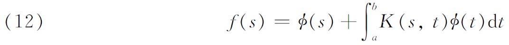
的方法，其中φ（s）是未知的，
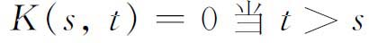
。沃尔泰拉把这个方程写成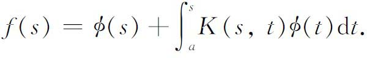
沃尔泰拉的解法是令
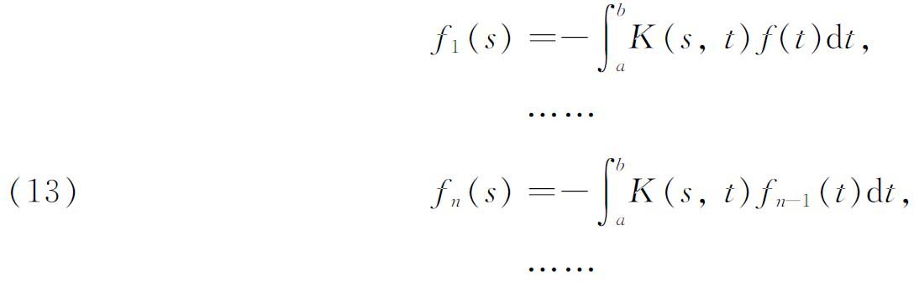
并取φ（s）为
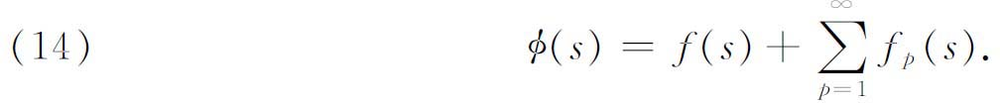
对他的核K（s，t），沃尔泰拉巧妙地证明了（14）是收敛的，而如果把（14）代入（12），就可以证明它是一个解。这个代入给出
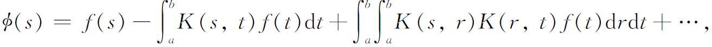
它可以写成
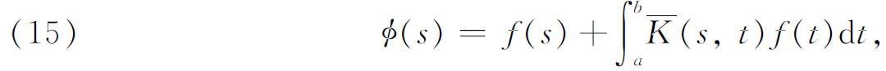
其中
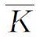
（后来希尔伯特称之为解核或预解式）是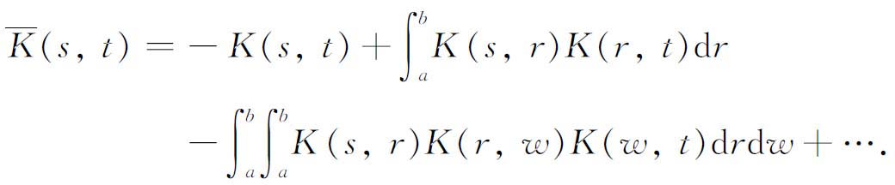
等式（15）是刘维尔较早对一个特殊的积分方程得到的表达式，并归于卡尔·诺伊曼。沃尔泰拉还解出了第一类积分方程
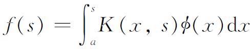
，用的方法是把它们化成第二类方程。1896年沃尔泰拉观察到，第一类积分方程是含n个未知数的n个线性代数方程组当n变成无穷时的极限形式。弗雷德霍姆（1866—1927）是斯德哥尔摩的数学教授，很关心求解狄利克雷问题，他在1900年(11)吸收了上述这种看法，并把它用于解第二类积分方程，即形为（12）的方程，而且对核K（s，t）不加限制。
我们将把弗雷德霍姆所处理的方程写成
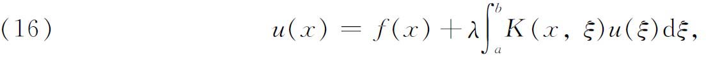
虽然在他的文章中参数λ没有明显出现。然而，他所做的，如果我们要陈述的话，借助于他后来的工作将更易理解。为了忠实表现弗雷德霍姆的公式，我们应当令λ＝1或把它看作隐含在K内。
弗雷德霍姆把x的区间［a，b］用分点
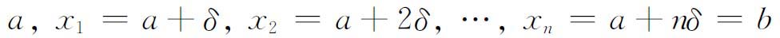
分成n等分，然后他把（16）中的定积分用和
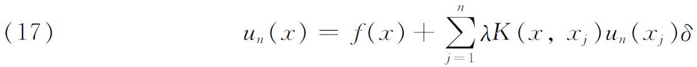
去代替。现在假设方程（17）对［a，b］的所有x值成立，因此它必须对
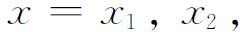
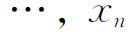
成立，这就给出了n个方程的方程组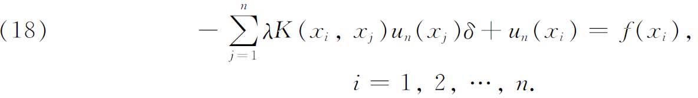
这个方程组是由n个非齐次线性方程组成的，用以确定n个未知数
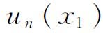
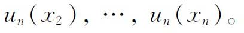
在线性方程组理论中，下面的结果是熟知的：如果矩阵
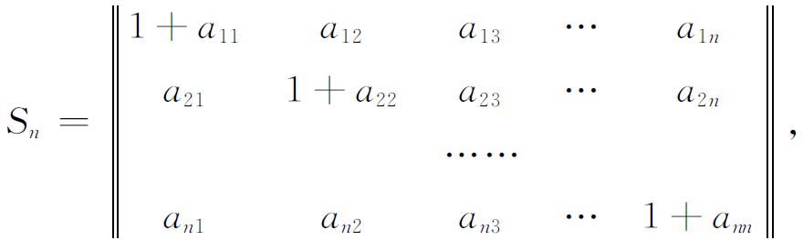
那么Sn的行列式D（n）有下面的展开(12)：
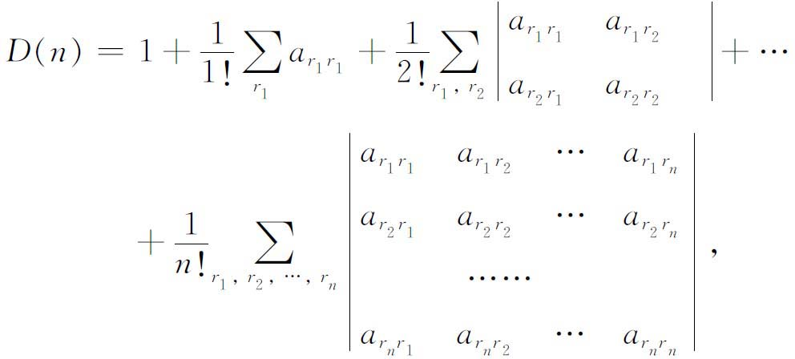
其中
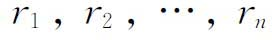
独立地跑遍1到n。展开（18）中系数的行列式，然后让n变为无穷，弗雷德霍姆得到行列式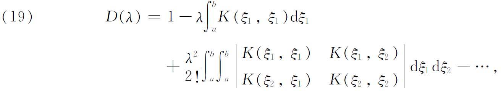
他把这称为（16）的或核K的行列式。类似地，考虑（18）中系数的行列式的第ν行第μ列的元素的余子式，并令n变成无穷，弗雷德霍姆就得到函数
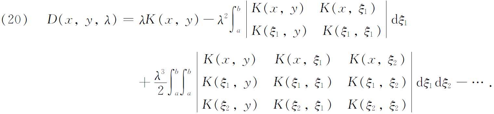
弗雷德霍姆称
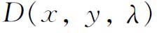
为核K的第一子式，因为它起着n个未知数n个线性方程的情形中第一子式的类似作用。他还把整函数D（λ）的零点称为核K（x，y）的根。把克莱姆法则应用到线性方程组（18），并令n变为无穷，弗雷德霍姆推导出了（16）的解的形式。然后通过直接代入，证明了它是正确的，因而能够断言下面的结果：如果λ不是K的根，即D（λ）≠0，那么（16）有一个且只有一个（连续）解，就是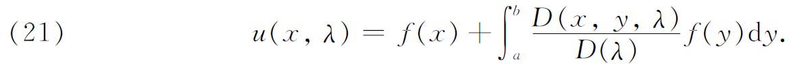
此外，如果λ是K（x，y）的根，那么（16）或者没有连续解，或者有无穷多个解。
弗雷德霍姆还得到进一步的结果，其中包含着齐次方程
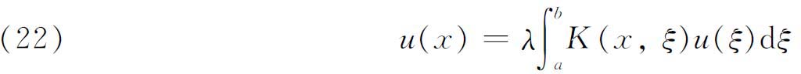
和非齐次方程（16）之间的关系。从（21）几乎可以显然地看出，当λ不是K的根时，（22）只有唯一的连续解u≡0。因此，他考虑λ是K的根的情形。设λ＝λ1是这样的一个根，那么（22）有无穷多个解
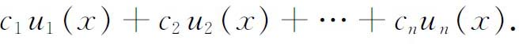
其中
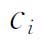
都是任意常数；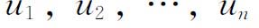
是线性无关的，称为主解；n依赖于λ1。量n称为λ1的指标（index）［它并不是λ1使D（λ）为0的重数］。弗雷德霍姆巧妙地确定了任何一个根λi的指标，并证明指标永远不超过重数［重数永远是有限的］。D（λ）＝0的根称为K的特征值；根的集合称为谱（spectrum）。（22）的对应于特征值的解称为特征函数。至此弗雷德霍姆就有可能来建立此后被称为弗雷德霍姆择一定理（alternative theorem）的结果了。当λ是K的特征值时，不仅积分方程（22）有了n个独立解，而且带有转置核的相伴或伴随（associated或adjoint）方程
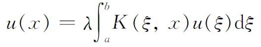
对于同一特征值也有n个独立解
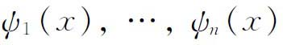
，因而这时的非齐次方程（16）是可解的，当且仅当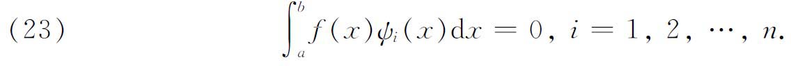
最后这些结果，极其密切地平行于齐次与非齐次的线性代数方程组的理论。